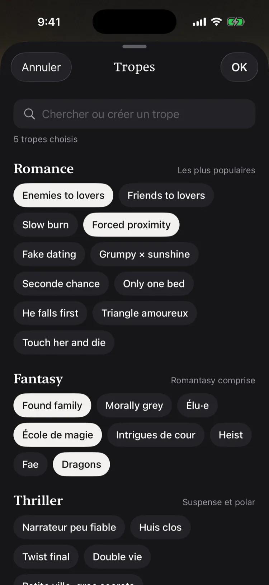
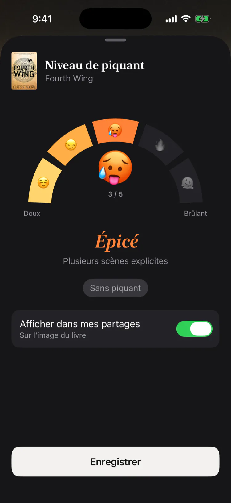
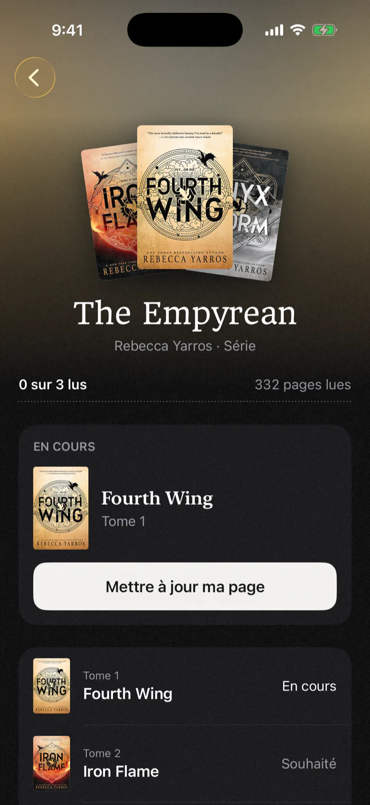
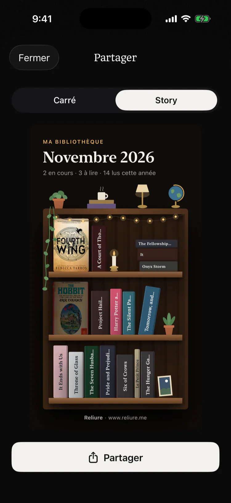
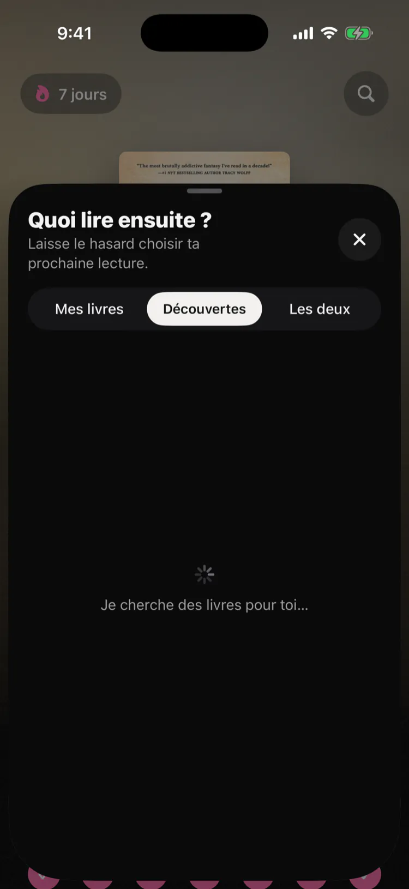
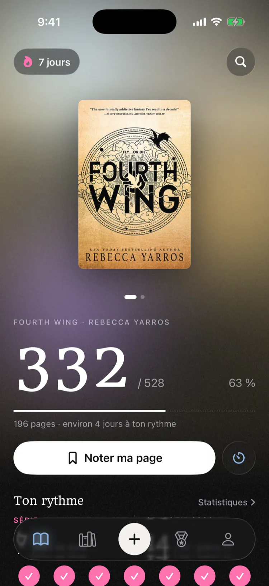

Une app de lecture qui parle BookTok
Dernière mise à jour : 20 novembre 2026
Reliure est une app iPhone gratuite pour suivre vos lectures, qui connaît ce qui compte sur BookTok : les tropes, le piquant et les séries. Sans compte, sans pub, sans abonnement.

Associez ses tropes à chaque livre
Ennemis à amants, famille choisie : donnez à chaque livre ses tropes, puis retrouvez vos tropes préférés de l’année dans vos statistiques de lecture.
Notez le piquant, de Doux à Brûlant
Donnez à chaque livre un niveau de piquant, de Doux à Brûlant, à côté de votre évaluation, de vos notes et de vos citations préférées.

Gardez vos séries ensemble, dans l’ordre
Les livres d’une même série sont regroupés, dans l’ordre de lecture, avec le prochain tome à lire qui vous attend.

Partagez vos rayons et votre année
Partagez votre bibliothèque, un livre, une citation, un mois ou toute votre année de lecture en image, carrée pour une publication ou verticale pour une story, avec Instagram, Messages ou toute autre app de votre iPhone.

Laissez la roue choisir votre prochaine lecture
Trop de livres dans votre pile à lire ? Faites tourner la roue et laissez le hasard choisir parmi vos livres, ou parmi des livres d’Open Library, des auteurs que vous avez aimés et des genres que vous lisez le plus.

Gratuit et privé
Reliure fonctionne sans compte. Votre bibliothèque reste sur votre iPhone et dans votre propre iCloud, et vous pouvez importer votre bibliothèque Goodreads pour commencer.
Téléchargez Reliure sur l’App Store : gratuit, sans compte, sans pub et sans abonnement.

Questions
Consultez les questions fréquentes ou l’assistance.